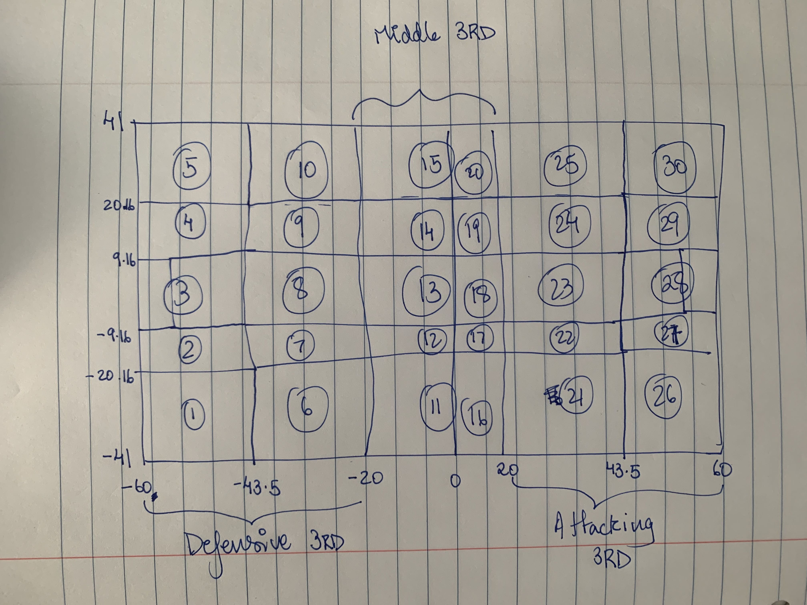

# loading required packages onto working instance
library(tidyverse)
library(DBI)
library(RSQLite)Tracking Data Project
Environment Instantiation
I begin by loading required packages onto the Quarto Working Instance using the library() command. It will throw an error if these packages are not installed on the instance, after which you may run install.packages("<package_name>") to install and run the command again.
Local SQLite3 Connection
I then create a local SQLite3 connection. It is on temporary memory, so it will lose all data tables in its schema if they not saved to external sources before the session is closed. For this project I choose to use SQLite3 in the interest of time and laptop computation constraints.
I will create the database, called TD for this project to host all these data tables in local memory
# create the database connection, in local memory
TD<- dbConnect(RSQLite::SQLite(), "TD.sqlite")Loading Event and Player Location Data
I first create the table schemas, and append the data into them using the dbWriteTable() function directly into our TD Database.
-- creating the table schemas
-- for the events table
CREATE TABLE IF NOT EXISTS events(
GameEventID VARCHAR(15) PRIMARY KEY NOT NULL,
GameID VARCHAR(15) NOT NULL,
Period INTEGER NOT NULL,
GameClock DOUBLE NOT NULL,
BallX DOUBLE NOT NULL,
BallY DOUBLE NOT NULL,
EventPlayerID VARCHAR(15) NOT NULL,
PassOutcome VARCHAR(15) NOT NULL,
EventPlayerSpeed DOUBLE NOT NULL,
IsPossGoal INTEGER NOT NULL,
IsNextPossGoal INTEGER NOT NULL
);-- player_locations table
-- Note that by design
-- we can create a primary key tuple of PlayerID and GameEventID,
-- as well as create a foreign key reference to events.GameEventID
CREATE TABLE IF NOT EXISTS player_locations(
GameEventID VARCHAR(15) NOT NULL,
IsHome INTEGER NOT NULL,
IsTM INTEGER NOT NULL,
IsePlayer INTEGER NOT NULL,
PlayerID VARCHAR(15) NOT NULL,
PlayerX DOUBLE NOT NULL,
PlayerY DOUBLE NOT NULL,
BallX DOUBLE NOT NULL,
BallY DOUBLE NOT NULL,
PRIMARY KEY(GameEventID, PlayerID),
FOREIGN KEY(GameEventID) REFERENCES events(GameEventID)
);dbListTables(conn=TD)[1] "events" "player_locations"Now, we load the csv file data into the created tables
RSQLite::dbWriteTable(conn=TD,
name="events",
value="RapidsDataAnalyticsChallenge_Events.csv",
sep=",",
overwrite=F,
append=T,
header=T)dbListTables(conn=TD)[1] "events" "player_locations"Inspecting the Table import,
PRAGMA table_info(events);| cid | name | type | notnull | dflt_value | pk |
|---|---|---|---|---|---|
| 0 | GameEventID | VARCHAR(15) | 1 | NA | 1 |
| 1 | GameID | VARCHAR(15) | 1 | NA | 0 |
| 2 | Period | INTEGER | 1 | NA | 0 |
| 3 | GameClock | DOUBLE | 1 | NA | 0 |
| 4 | BallX | DOUBLE | 1 | NA | 0 |
| 5 | BallY | DOUBLE | 1 | NA | 0 |
| 6 | EventPlayerID | VARCHAR(15) | 1 | NA | 0 |
| 7 | PassOutcome | VARCHAR(15) | 1 | NA | 0 |
| 8 | EventPlayerSpeed | DOUBLE | 1 | NA | 0 |
| 9 | IsPossGoal | INTEGER | 1 | NA | 0 |
Now, I load the player location data associated with each event.
RSQLite::dbWriteTable(conn=TD,
name="player_locations",
value="RapidsDataAnalyticsChallenge_PlayerLocations.csv",
sep=",",
overwrite=F,
append=T,
header=T)And inspecting the player_locations table import…
PRAGMA table_info(player_locations);| cid | name | type | notnull | dflt_value | pk |
|---|---|---|---|---|---|
| 0 | GameEventID | VARCHAR(15) | 1 | NA | 1 |
| 1 | IsHome | INTEGER | 1 | NA | 0 |
| 2 | IsTM | INTEGER | 1 | NA | 0 |
| 3 | IsePlayer | INTEGER | 1 | NA | 0 |
| 4 | PlayerID | VARCHAR(15) | 1 | NA | 2 |
| 5 | PlayerX | DOUBLE | 1 | NA | 0 |
| 6 | PlayerY | DOUBLE | 1 | NA | 0 |
| 7 | BallX | DOUBLE | 1 | NA | 0 |
| 8 | BallY | DOUBLE | 1 | NA | 0 |
It seems to be as-created.
Exploratory Data Analysis (Quick)
Now, we need to check the counts of each game event. We note that there are 220 events which do not capture locations of all 22 players.
# reading in player_locations and events data
# player_locations_df<- read.csv(file="RapidsDataAnalyticsChallenge_PlayerLocations.csv",
# header=T)
player_locations_df<- dbGetQuery(conn=TD, statement = "SELECT * FROM player_locations")
events_df<- dbGetQuery(conn=TD, statement = "SELECT * FROM events")WITH incomplete_events AS (SELECT GameEventID, COUNT(GameEventID) as n
FROM player_locations
GROUP BY GameEventID
HAVING n <> 22
ORDER BY n ASC)
SELECT n, COUNT(n) as "num_incomplete_events"
FROM incomplete_events
GROUP BY n;| n | num_incomplete_events |
|---|---|
| 20 | 25 |
| 21 | 195 |
Since we miss at most 2 players, and in most cases only one player, we can assume that there were red cards handed out in the match/player was off the field for injury and not impacting play at the moment of the event.
We will check the number of NAs blanks if they exist, and what the values are by column.
[I have loaded in the CSVs in R as well with the format <table_name>_df, to show competency in R for this step.]
So, for the event IDs…
table(is.na(events_df))
FALSE
39028 summary(events_df) GameEventID GameID Period GameClock
Length:3548 Length:3548 Min. :1.000 Min. : 8.0
Class :character Class :character 1st Qu.:1.000 1st Qu.: 742.5
Mode :character Mode :character Median :2.000 Median :1512.2
Mean :1.539 Mean :1490.1
3rd Qu.:2.000 3rd Qu.:2212.5
Max. :2.000 Max. :3513.0
BallX BallY EventPlayerID PassOutcome
Min. :20.01 Min. :0.000 Length:3548 Length:3548
1st Qu.:22.26 1st Qu.:1.320 Class :character Class :character
Median :24.54 Median :2.580 Mode :character Mode :character
Mean :24.69 Mean :2.565
3rd Qu.:27.12 3rd Qu.:3.850
Max. :29.99 Max. :4.990
EventPlayerSpeed IsPossGoal IsNextPossGoal
Min. :0.020 Min. :0.00000 Min. :0.0000
1st Qu.:1.710 1st Qu.:0.00000 1st Qu.:0.0000
Median :2.896 Median :0.00000 Median :0.0000
Mean :3.089 Mean :0.06905 Mean :0.0279
3rd Qu.:4.286 3rd Qu.:0.00000 3rd Qu.:0.0000
Max. :8.343 Max. :1.00000 Max. :1.0000 There are no missing values
For the player locations…
table(is.na(player_locations_df))
FALSE
700299 summary(player_locations_df) GameEventID IsHome IsTM IsePlayer
Length:77811 Min. :0.0000 Min. :0.0000 Min. :0.0000
Class :character 1st Qu.:0.0000 1st Qu.:0.0000 1st Qu.:0.0000
Mode :character Median :1.0000 Median :1.0000 Median :0.0000
Mean :0.5003 Mean :0.5007 Mean :0.0456
3rd Qu.:1.0000 3rd Qu.:1.0000 3rd Qu.:0.0000
Max. :1.0000 Max. :1.0000 Max. :1.0000
PlayerID PlayerX PlayerY BallX
Length:77811 Min. :-55.99 Min. :-40.45000 Min. :-51.68
Class :character 1st Qu.: 12.72 1st Qu.: -6.40000 1st Qu.: 22.41
Mode :character Median : 26.36 Median : -0.02000 Median : 25.08
Mean : 21.87 Mean : 0.00236 Mean : 25.03
3rd Qu.: 34.04 3rd Qu.: 6.39000 3rd Qu.: 27.88
Max. : 56.10 Max. : 38.72000 Max. : 57.05
BallY
Min. :-34.57000
1st Qu.: -3.24000
Median : -0.14000
Mean : -0.05903
3rd Qu.: 2.96000
Max. : 33.80000 Note that the Ranges of ballX and ballY differ between these datasets. Judging from the ranges of these ball locations in the events data (ballX \(\in\) [20.01, 29.99], ballX \(\in\) [0, 4.99]), we see that the passes are supposedly only played from the middle third of the pitch in central/right-central areas.
Moreover, the ball location ranges in the player_locations dataset show a wider range, allowing us to assume that the locations in the events data are pass originations, and the locations in the player_locations dataset are the destinations.
Now, I note that there are issues with the player and ball locations Y-coordinates not being reflected right between the datasets.
-- Obtaining the number of misreflected events,
-- and coordinate count that was misreflected
WITH T1 AS (SELECT P.GameEventID, P.IsePlayer,
P.PlayerX, P.PlayerY, P.BallX as "P.BallX", P.BallY as "P.BallY",
E.BallX as "E.BallX", E.BallY as "E.BallY",
ABS(P.PlayerX - E.BallX) as "diffBallX",
ABS(P.PlayerY - E.BallY) as "diffBallY"
FROM player_locations P JOIN events E ON P.GameEventID = E.GameEventID
WHERE IsePlayer = 1 AND (diffBallX > 0 OR diffBallY > 0)
ORDER BY P.GameEventID ASC)
-- number of events misreflected (Note all misreflections in the Y column)
SELECT COUNT(*) AS "num_events_misreflected",
SUM(CASE WHEN diffBallX > 0 THEN 1 ELSE 0 END) AS "num_X_misreflected",
SUM(CASE WHEN diffBallY > 0 THEN 1 ELSE 0 END) AS "num_Y_misreflected"
FROM T1;| num_events_misreflected | num_X_misreflected | num_Y_misreflected |
|---|---|---|
| 1773 | 0 | 1773 |
1773 erroneous ball locations of 3548 events in all is a cause of concern.
However, noting that the PlayerX and PlayerY columns could correspond to the right ball locations (it is still highly improbable that all pass locations originate only in the central midfield zones, and the X coordinates need investigating as well) I will assume them to be the pass origination locations for this project.
For future debugging reference, I create a table on the database keeping in track these game event IDs which have these misreflections.
-- Creating Table in Database for future reference
-- of events with discrepancies
CREATE TABLE IF NOT EXISTS pass_org_misreflections AS
SELECT P.GameEventID, P.IsePlayer,
P.PlayerX, P.PlayerY, P.BallX as "P.BallX", P.BallY as "P.BallY",
E.BallX as "E.BallX", E.BallY as "E.BallY",
ABS(P.PlayerX - E.BallX) as "diffBallX",
ABS(P.PlayerY - E.BallY) as "diffBallY"
FROM player_locations P JOIN events E ON P.GameEventID = E.GameEventID
WHERE IsePlayer = 1 AND (diffBallX > 0 OR diffBallY > 0)
ORDER BY P.GameEventID ASC;and again, ensuring that it is saved to the database…
Before we begin, we need to include the pass origination coordinates as separate columns in the player_locations dataset to help with our calculations.
I create a temporary table to ensure a single calculation.
Note: CTEs can also be used, but I want to reduce the cell execution time and improve reusability of code.
CREATE TEMPORARY TABLE IF NOT EXISTS player_locations_with_origin AS
WITH T1 AS(
SELECT P.GameEventID, P.PlayerID, P.PlayerX as OriginX, P.PlayerY as OriginY
FROM player_locations P
WHERE P.IsePlayer=1
ORDER BY P.GameEventID ASC
)
SELECT P1.*, T1.OriginX, T1.OriginY
FROM player_locations P1 LEFT JOIN T1 on P1.GameEventID=T1.GameEventID
ORDER BY P1.GameEventID ASC;We also need to decide on the pitch dimensions. We explore the Player Location rows which are over the initial suggested bounds suggested for X and Y
SELECT DISTINCT(P.GameEventID), P.OriginX, P.OriginY, P.BallX, P.BallY, E.PassOutcome
FROM player_locations_with_origin P JOIN events E on P.GameEventID=E.GameEventID
WHERE ABS(P.PlayerX) > 55.3 OR ABS(P.PlayerY) > 36.8 OR
ABS(P.BallX) > 55.3 OR ABS(P.BallY) > 36.8;| GameEventID | OriginX | OriginY | BallX | BallY | PassOutcome |
|---|---|---|---|---|---|
| 1454816 | 24.83 | -0.59 | 57.05 | 5.38 | Complete |
| 1472021 | 20.92 | -2.57 | 23.27 | -5.40 | Complete |
| 1475092 | 21.74 | 4.80 | 20.19 | 5.87 | Complete |
| 5866927 | 24.84 | -0.74 | 24.17 | -7.72 | Complete |
| 6008965 | 27.42 | 2.83 | 27.17 | 2.28 | Complete |
| 6312705 | 28.39 | 0.99 | 0.00 | 0.00 | Out |
| 6323246 | 29.42 | -1.56 | 34.44 | -7.26 | Complete |
Considering the lower distances that the ball travels in the lagged logging of the player locations, and noting that players could realistically be close to the goaline and wide touchlines, we can assume our X coordinates to be in [-60, 60] and Y coordinates to be in [-41, 41].
So I assume that the pitch dimensions are 120X82 meters. This assumption, which is within the FIFA and MLS regulations for pitch sizes allows me to keep these 6 events to perform more complete analyses.
Now I begin feature Engineering
Feature Engineering
Note that we do not have the data for the type of pass, nor the destination coordinates of the pass, which are usually significant features in an expected assists model. We do, however, have the player location data for each event.
I look into the location characteristics, analysing player numbers on select zones (from 30 overall) across all thirds of the pitch, as well as understanding the distance and angles they make with respect to goal. I also try understanding the patterns of zonal overloading and player congestion by proximities and plus-minus metrics for zones in the attacking third, correctly identify marked team-mates and potential passing options, where the opponent cannot make an interception easily enough.
Understanding that these passes are made in the middle-attackikgn third areas of the pitch, make the assumption that we are in the attacking phase, and base my analysis on zones specifically in the attacking third.
1. OriginX, OriginY
These features are the Event Player’s coordinates for the event. Ideally, an (OriginX, OriginY) value closer to goal or the edges of the box should translate into good assist opportunities.
2. location_zone and pitch_third
As I mentioned earlier, I split the whole 120mx82m pitch into 30 zones total (i.e, 10 in every third).

This location_zone feature contains the zone of origination of the pass, while the pitch_third \(\in\) [Defensive 3rd, Middle 3rd, Attacking 3rd] denotes the third of the pitch where the shot is taken from. The location_zone allows to understand vertical as well as horizontal movement within thirds, allowing for deeper analyses and insights to be made.
Ideally, the zones closer to (or in the) attacking third should give you a better chance at assisting. This zonal analyses also gives us a chance to truly analyse positional overloads (as we will see below, overloads with respect to attacking halfspaces (22 & 24), wide areas (21, 25, 26 & 30), in front of the box (23) and within the box (27, 28 & 29))
3. distance_to_goalcentre and goalmouth_angle
Now, I measure the distance from the pass location to the goalcentre. the closer you are to goal, the more that the team has hopefully advanced towards the attacking third and the box, and should result in more of a chance of a pass becoming an assist.
goalmouth_angle is the angle, in degrees, subtended by the lines from the near and far post to the pass location. The distance of the lines from pass location to either post are saved in distance_to_near_post and distance_to_far_post respectively.
a higher goalmouth angle suggests that the player is closer and more square on goal–and that passes from this range should usually result in assists. What is more interesting, however, is the cases where it is of a lower value. This usually means that
- the player is very far from the goal, implying that we might need more than a single pass to convert the current posession into a goal (depending on the number of teammates and opponents ahead of the passer), or
- The player is in wide areas close to the touchline, in prime cutback zones (26, 27, 29, 30). Cutbacks are usually whizzed across the face of goal for any player to simply tap the ball into the goal, implying that the current posession sequence can result in goal.
- The player is very wide areas, looking for early crossing opportunities (zones 21 and 25). This would usually result in a goal provided there is a player in the correct sub-channels (zones 27 and 29) in the box or making the runs from halfspaces (zones 22 & 24) into zone 28.
In most cases however, when the player has a range of angles in the 20-50 degrees, it usually means that the players are in the most probable assist creating locations of just outside the box (22, 23 & 24), allowing runners around and slightly in front of them on goal.
This metric, when combined with zone provides a lot of insights into passing options and attacking patterns that provide assists.
Note: Plus-minus calculations for number of players by location/area
Before I proceed further, I want to explain the plus-minus metric i have created to understand overloads by location.
The overload plus-minus function is of the form
(# teammates in location) - (# opponents in location)
If the value is positive, then the attacking team has the advantage in these locations, and vice versa.
These numbers are obtained by summing up indicator variables denoting their presence in the relevant thirds and zones.
I will keep the raw number of teammates, opponents and total number of players in a given location, as that helps better understand player congestions through the pitch at the time of the event.
More congested areas away from goal usually mean a higher chance of disposession, and thus a lower chance of turning the pass into an assist. Congestion areas also help us understand defensive and attacking shapes during the event, allowing the model to learn from it and hopefully make better predictions.
I create all these indicator columns (though slightly inefficient) to ensure that less time is taken for dummy column creation for cases where we need to use most of these columns for further analysis, for easier understanding of the raw data to non-technical audiences, and quicker query writing in subsequent CTEs to create other features.
4. Number of Teammates and Opponents around the passer
Calculate the number of players and understand the plus-minus values in front of, behind, to the left and right of the passer for each game event. A higher number of teammates in zones just outside or inside the box who can be valid passing options in front of the passer can increase the chances of a pass becoming an assist. Similarly, understanding the overload and congestion patterns using these metrics for the wide areas (overall, left, and right) can help us understand effective wing-play assist patterns (through inverted wing play), while simultaneously helping understand whether the subsequent posession results in goal (key pass to overlapping full backs putting a cross in to players in the box, for example).
5. Number of teammates and opponents by third
Understanding overloads by third is essential to understanding the exact sub-phase of attacking the team is in. Usually, if there are more opponents than teammates in the attacking third, then it is usually of a lower chance that a pass can be successfully completed and a goal can be scored, resulting in a lower probability of an assist.
Midfield superiority usually dictates posession and progressive passing trends. More passing options in midfield imply the higher chance for posession retention and progressive movement due to the extra personnel The progressive movement could translate into line-breaking throughballs into the halfspaces or just outside the box leading to high chances at goal, implying a higher chance for passes from and to the middle third resulting in an assist.
Noting the number of players in the defensive third helps us understand the defensive line height of the attacking team, as well as their rest-defense principles. a lower line implies more players in the defensive third, else there is more chance of pushing the attacking team’s defenders up towards the midfield to apply pressure on the defending team (further highlighting the importance of a midfield overload in chance creation).
Depending on the location_zone and goalmouth_angle for the passer, we should generally expect that usually a number of teammates as valid passing options spread in areas closer to goal wrt to the passer should result in a higher chance for an assist.
6. Number of teammates and opponents in proximity to the passer
I define proximity as a player being within 5 meters of the passer.
If the pass origin zone is close to goal, and you have more teammates in proximity (i.e, the plus-minus of players in proxmity is a positive number), then you would expect to have mroe passing options that could lead to a goal, resulting in a higher probabilty for an assist.
If there are more opponents in proximity but your distance_to_goalcentre is low, this might mean you need to play a backward pass to retain posession (might not be a bad thing if you have inverted wingers or #10s playing off of you for example). If you have more opponents around you and you are in the middle third from a non-threatening zone (like 11 or 15 for example), the player needs to try a risky long lobbed pass to switch play or beat the crowd. the lower probability of this coming off is again a lower chance for an assist for this pass, however it could result in the Next posession sequence resulting in a goal (from a cross or a pass into the box from halfspaces).
7. Number of teammates and opponents in attacking halfspaces and just outside the box
Define the Attacking Halfspaces as zones 22 and 24, and define the zone just outside the box as zone 23.
Usually, in the attacking phase, we notice that most of the playmakers (#10s and sometimes a creative #8) make incisive runs into zone 28 from these halfspaces. The halfspaces (along with zone 28) are also zones where most of the cross and corner clearances end up. If the attacking team regains posession in these zones, quick transitions and passes laid onto teammates making runs into the box are usually deadly. This increases the probability for an assist from these zones.
Conversely, if the defending team has more of a presence here in comparision to the attacking team, and has only the goalkeeper behind them, this could signify a compact low defensive line with an offside trap tactic to prevent runs in behind towards goal.
8. Number of teammates and opponents out wide in total, out wide left, and out wide right
Understanding the overloading of the attacking team in wide positions helps understand their pattern of play–understanding potential runs into the halfspaces (in an inverted wide player setting) or whether they approach the goaline and touchline to float, drill or whip crosses into the box. Usually, a greater number of players out wide highlights a spread out game with a high probability of crosses being the main assist type. We create a metric that can supplement that information when present to better inform the probability of it leading to an assist.
Moreover, from these metrics we can get a rough idea of the width and overload philosophy of the defending team. If there is a wide-left defensive overload (i.e, the plus-minus for players in wide left zones is negative) for example, the passer is closer to the overloaded flank, and that there are a lower proprtion of players on the other flank, we can understand that this is a ball-side overload. ball side overloads force press resistance or switch of flanks from teams, both of which are high risk options. The chances for dispossession outweigh the goalscoring chances from a pass, resulting in a lower chance of an assist.
However, if there is a attacking wide overload, this means that as we get closer to halfspaces, inverted play can begin and shots can be taken from these high shot frequency zones, which have a favourable shooting goalmouth angle and allow for a wider variety of shots.
9. Number of teammates and opponents in the box
Though seemingly straightforward, the analysis of congestion of players in the box can differ based on pass types and other underlying situations.
Usually, if there is a high congestion of players in the box–especially a concentration within the shooting cone (the triangle made by the shooter with respect to the goalmouth)-this results in a lower chance of a shot leading to goal. more often than not, even crosses have a low xG, and most are saved or misdirected due to man-marking or zonal marking defensive clearances and disposessions in the box by the centre backs. However, if there is usually a numerical advantage to the attacking team, the passer can pick the free man, and this could result in a higher chance at goal.
In cases where the pass is coming from the halfspaces or just outside the box, having a lot of players can result in a lot of rebounds and goals, so though this pass might not result in an assist, it could result in a goal in the next pass-possession sequence.
10. No. of pressers on the passer
Here, I make the assumption that if an opposition player is within 3 metres of the passer, they can realistically attempt to pressure the passer to perform their action quicker. effective pressing in large numbers towards wide zones have a higher probability of turnover, which means passes are incomplete and thus have a lower chance of becoming an assist.
Conversely, a lower number of pressers on the passer would mean that they have had the time to pick a viable (hopefully progressive) passing option, increasing the chances of a goal, and thereby the pass becoming an assist.
11. Number of Teammates marked by an opponent
I calculate the minimum distance between every single teammate and opponent, and if that minimum distance is within 1.5 meters, then the attacking player is considered marked.
Now, a pass is going to be highly improbable if most of the teammates are marked by the opponent, since it increases chance of disposession or miscontrol due to the press from the defensive marker.
More teammates marked should mean a lower assist probability and vice versa.
12. Valid Passing Options for the passer
Now, consider the cases where the teammate is not marked, but opponents are blocking passing lanes to said teammate. More such opposition positioning will imply higher probabilty of interception and thereby a turnover, greatly reducing the probability of the pass being successful, much less an assist.
So, I define a valid passing option as a teammate who is unmarked AND does not have an opposing player between the passer and teammate within 0.5 metres of the direct passing line between passer and teammate.
Clearly, an increase in valid passing options, especially in central zones in the attacking third (which are high frequency high-xG shot zones) should translate to higher assist probability.
Having more valid passing options out wide than centrally could be slightly detrimental to assist probabilty. More passing options in the wide attacking 3rd could correspond to a compact low block by the defensive team–closing down distances between defense and attack, heavily populating central areas and surrendering posession out wide noting the low chances of goals being scored from crosses whipped in and floated in in this situation.
Code for Feature Engineering
I decided to create a table for the zonewise metrics, called zonewise_metrics, to preserve these raw metrics which are derived for each player. Creating a table rather than a view makes sense in this SQLite workflow, where Views are read-only. These variables and intermediate metrics could be used for further analyses, and if any issues exist, can be quickly queried and debugged.
-- COUNT(*) counts null, count(<column name>) ignores null
-- average ignores null
-- sum ignores null
CREATE TABLE IF NOT EXISTS zonewise_metrics AS
WITH T1 AS(SELECT *,
-- Feature 4. Players Ahead & behind of Passer
CASE WHEN ((PlayerX > OriginX) AND (IsTM=1)) THEN 1 ELSE 0 END AS TM_is_ahead_of_passer,
CASE WHEN ((PlayerX < OriginX) AND (IsTM=1)) THEN 1 ELSE 0 END AS TM_is_behind_of_passer,
CASE WHEN ((PlayerX > OriginX) AND (IsTM=0)) THEN 1 ELSE 0 END AS opp_is_ahead_of_passer,
CASE WHEN ((PlayerX < OriginX) AND (IsTM=0)) THEN 1 ELSE 0 END AS opp_is_behind_of_passer,
CASE WHEN (PlayerX > OriginX) THEN 1 ELSE 0 END AS is_ahead_of_passer,
CASE WHEN (PlayerX < OriginX) THEN 1 ELSE 0 END AS is_behind_of_passer,
-- Feature 4. Players left and right of Passer
CASE WHEN ((PlayerY > OriginY) AND (IsTM=1)) THEN 1 ELSE 0 END AS TM_is_left_of_passer,
CASE WHEN ((PlayerY < OriginY) AND (IsTM=1)) THEN 1 ELSE 0 END AS TM_is_right_of_passer,
CASE WHEN ((PlayerY > OriginY) AND (IsTM=0)) THEN 1 ELSE 0 END AS opp_is_left_of_passer,
CASE WHEN ((PlayerY < OriginY) AND (IsTM=0)) THEN 1 ELSE 0 END AS opp_is_right_of_passer,
CASE WHEN (PlayerY > OriginY) THEN 1 ELSE 0 END AS is_left_of_passer,
CASE WHEN (PlayerY < OriginY) THEN 1 ELSE 0 END AS is_right_of_passer,
-- Feature 2. Zone of player
CASE WHEN (PlayerX >=-60 AND PlayerX < -43.5) AND (PlayerY >=-41 AND PlayerY < -20.16) THEN 1
WHEN (PlayerX >=-60 AND PlayerX < -43.5) AND (PlayerY >=-20.16 AND PlayerY < -9.16) THEN 2
WHEN (PlayerX >=-60 AND PlayerX < -43.5) AND (PlayerY >=-9.16 AND PlayerY < 9.16) THEN 3
WHEN (PlayerX >=-60 AND PlayerX < -43.5) AND (PlayerY >=9.16 AND PlayerY < 20.16) THEN 4
WHEN (PlayerX >=-60 AND PlayerX < -43.5) AND (PlayerY >=20.16 AND PlayerY <= 41) THEN 5
-- second latitudinal column
WHEN (PlayerX >=-43.5 AND PlayerX < -20) AND (PlayerY >=-41 AND PlayerY < -20.16) THEN 6
WHEN (PlayerX >=-43.5 AND PlayerX < -20) AND (PlayerY >=-20.16 AND PlayerY < -9.16) THEN 7
WHEN (PlayerX >=-43.5 AND PlayerX < -20) AND (PlayerY >=-9.16 AND PlayerY < 9.16) THEN 8
WHEN (PlayerX >=-43.5 AND PlayerX < -20) AND (PlayerY >=9.16 AND PlayerY < 20.16) THEN 9
WHEN (PlayerX >=-43.5 AND PlayerX < -20) AND (PlayerY >=20.16 AND PlayerY <= 41) THEN 10
-- third latitudinal column
WHEN (PlayerX >=-20 AND PlayerX < 0) AND (PlayerY >=-41 AND PlayerY < -20.16) THEN 11
WHEN (PlayerX >=-20 AND PlayerX < 0) AND (PlayerY >=-20.16 AND PlayerY < -9.16) THEN 12
WHEN (PlayerX >=-20 AND PlayerX < 0) AND (PlayerY >=-9.16 AND PlayerY < 9.16) THEN 13
WHEN (PlayerX >=-20 AND PlayerX < 0) AND (PlayerY >=9.16 AND PlayerY < 20.16) THEN 14
WHEN (PlayerX >=-20 AND PlayerX < 0) AND (PlayerY >=20.16 AND PlayerY <= 41) THEN 15
-- fourth latitudinal column
WHEN (PlayerX >=0 AND PlayerX < 20) AND (PlayerY >=-41 AND PlayerY < -20.16) THEN 16
WHEN (PlayerX >=0 AND PlayerX < 20) AND (PlayerY >=-20.16 AND PlayerY < -9.16) THEN 17
WHEN (PlayerX >=0 AND PlayerX < 20) AND (PlayerY >=-9.16 AND PlayerY < 9.16) THEN 18
WHEN (PlayerX >=0 AND PlayerX < 20) AND (PlayerY >=9.16 AND PlayerY < 20.16) THEN 19
WHEN (PlayerX >=0 AND PlayerX < 20) AND (PlayerY >=20.16 AND PlayerY <= 41) THEN 20
-- fifth latitudinal column
WHEN (PlayerX >=20 AND PlayerX <= 43.5) AND (PlayerY >=-41 AND PlayerY < -20.16) THEN 21
WHEN (PlayerX >=20 AND PlayerX <= 43.5) AND (PlayerY >=-20.16 AND PlayerY < -9.16) THEN 22
WHEN (PlayerX >=20 AND PlayerX <= 43.5) AND (PlayerY >=-9.16 AND PlayerY < 9.16) THEN 23
WHEN (PlayerX >=20 AND PlayerX <= 43.5) AND (PlayerY >=9.16 AND PlayerY < 20.16) THEN 24
WHEN (PlayerX >=20 AND PlayerX <= 43.5) AND (PlayerY >=20.16 AND PlayerY <= 41) THEN 25
-- sixth latitudinal column
WHEN (PlayerX > 43.5 AND PlayerX <= 60) AND (PlayerY >=-41 AND PlayerY < -20.16) THEN 26
WHEN (PlayerX >=43.5 AND PlayerX <= 60) AND (PlayerY >=-20.16 AND PlayerY < -9.16) THEN 27
WHEN (PlayerX >=43.5 AND PlayerX <= 60) AND (PlayerY >=-9.16 AND PlayerY < 9.16) THEN 28
WHEN (PlayerX >=43.5 AND PlayerX <= 60) AND (PlayerY >=9.16 AND PlayerY < 20.16) THEN 29
WHEN (PlayerX >=43.5 AND PlayerX <= 60) AND (PlayerY >=20.16 AND PlayerY <= 41) THEN 30
ELSE -1 END AS location_zone,
-- supplementary feature for Feature 5.
-- Factor for longitudinal 3rd on the pitch
-- Not used in current analyses, for understanding data table only
CASE WHEN (PlayerX >=-60 AND PlayerX < -20) THEN "Defensive 3rd"
WHEN (PlayerX >=-20 AND PlayerX < 20) THEN "Middle 3rd"
WHEN (PlayerX >=20 AND PlayerX <= 60) THEN "Attacking 3rd"
ELSE "Unknown" END AS pitch_third,
--Feature 5. Whether player in the respective third
-- for defensive third
CASE WHEN IsTM=1 AND IsePlayer=0 AND (PlayerX >=-60 AND PlayerX < -20) THEN 1 ELSE 0 END AS team_in_def_3rd,
CASE WHEN IsTM=0 AND IsePlayer=0 AND (PlayerX >=-60 AND PlayerX < -20) THEN 1 ELSE 0 END AS opp_in_def_3rd,
CASE WHEN (PlayerX >=-60 AND PlayerX < -20) THEN 1 ELSE 0 END AS in_def_3rd,
-- Feature 5. for middle third
CASE WHEN IsTM=1 AND IsePlayer=0 AND (PlayerX >=-20 AND PlayerX < 20) THEN 1 ELSE 0 END AS team_in_mid_3rd,
CASE WHEN IsTM=0 AND IsePlayer=0 AND (PlayerX >=-20 AND PlayerX < 20) THEN 1 ELSE 0 END AS opp_in_mid_3rd,
CASE WHEN (PlayerX >=-20 AND PlayerX < 20) THEN 1 ELSE 0 END AS in_mid_3rd,
-- Feature 5. for attacking third
CASE WHEN IsTM=1 AND IsePlayer=0 AND (PlayerX >=20 AND PlayerX <= 60) THEN 1 ELSE 0 END AS team_in_att_3rd,
CASE WHEN IsTM=0 AND IsePlayer=0 AND (PlayerX >=20 AND PlayerX <= 60) THEN 1 ELSE 0 END AS opp_in_att_3rd,
CASE WHEN (PlayerX >=20 AND PlayerX <= 60) THEN 1 ELSE 0 END AS in_att_3rd,
-- supplementary feature for Features 6, 10, 11 & 12
-- distances to passer
SQRT(POWER(PlayerX - OriginX, 2) + POWER(PlayerY - OriginY, 2)) AS dist_to_passer,
-- Feature 3. distances to goalcentre,
-- Goalcentre is (60, 0) by convention assumptions
SQRT(POWER(PlayerX - 60, 2) + POWER(PlayerY - 0, 2)) AS dist_to_goalcentre,
-- supplementary feature for Feature 3.
-- distances to left post
SQRT(POWER(PlayerX - 60, 2) + POWER(PlayerY - 3.66, 2)) AS dist_to_left_post,
-- supplementary feature for Feature 3.
-- distances to right post
SQRT(POWER(PlayerX - 60, 2) + POWER(PlayerY + 3.66, 2)) AS dist_to_right_post
FROM player_locations_with_origin),
T2 AS (SELECT *,
-- Feature 3.
-- angles to goalmouth (using the cosine rule)
DEGREES(ACOS((POWER(dist_to_left_post, 2) + POWER(dist_to_right_post, 2) - POWER(7.32, 2))/(2*dist_to_left_post*dist_to_right_post))) AS goalmouth_angle,
-- Feature 6. player in proxmity
CASE WHEN IsTM=1 AND dist_to_passer <=5 AND IsePlayer=0 THEN 1 ELSE 0 END AS team_in_proximity,
CASE WHEN IsTM=0 AND dist_to_passer <=5 AND IsePlayer=0 THEN 1 ELSE 0 END AS opp_in_proximity,
-- note that the passer cannot be in proximity to themselves, so for all non-passers only
CASE WHEN dist_to_passer <=5 AND IsePlayer=0 THEN 1 ELSE 0 END AS in_proximity,
-- Feature 10.
-- if the opponent is within 3 metres of the passer, then we can assume the passer can be pressured by that specific opponent
CASE WHEN IsTM=0 AND dist_to_passer<= 3 THEN 1 ELSE 0 END AS pressuring_passer,
-- Feature 7.
-- player in halfspace
CASE WHEN (IsTM=1 AND (location_zone=22 OR location_zone=24) AND IsePlayer=0) THEN 1 ELSE 0 END AS team_in_half_space,
CASE WHEN (IsTM=0 AND (location_zone=22 OR location_zone=24) AND IsePlayer=0) THEN 1 ELSE 0 END AS opp_in_half_space,
CASE WHEN location_zone=22 OR location_zone=24 THEN 1 ELSE 0 END AS in_half_space,
-- player in front of attacking box
CASE WHEN (IsTM=1 AND location_zone=23 AND IsePlayer=0) THEN 1 ELSE 0 END AS team_in_front_of_box,
CASE WHEN (IsTM=0 AND location_zone=23 AND IsePlayer=0) THEN 1 ELSE 0 END AS opp_in_front_of_box,
CASE WHEN location_zone=23 THEN 1 ELSE 0 END AS in_front_of_box,
-- Feature 8.
-- players out wide in attacking third
CASE WHEN IsTM=1 AND IsePlayer=0 AND (location_zone=21 OR location_zone=25 OR location_zone=26 OR location_zone=30) THEN 1 ELSE 0 END AS team_is_out_wide,
CASE WHEN IsTM=0 AND IsePlayer=0 AND (location_zone=21 OR location_zone=25 OR location_zone=26 OR location_zone=30) THEN 1 ELSE 0 END AS opp_is_out_wide,
CASE WHEN location_zone=21 OR location_zone=25 OR location_zone=26 OR location_zone=30 THEN 1 ELSE 0 END AS is_out_wide,
-- players out wide right in attacking third
CASE WHEN IsTM=1 AND IsePlayer=0 AND (location_zone=21 OR location_zone=26) THEN 1 ELSE 0 END AS team_is_out_wide_right,
CASE WHEN IsTM=0 AND IsePlayer=0 AND (location_zone=21 OR location_zone=26) THEN 1 ELSE 0 END AS opp_is_out_wide_right,
CASE WHEN location_zone=21 OR location_zone=26 THEN 1 ELSE 0 END AS is_out_wide_right,
-- players out wide left in attacking third
CASE WHEN IsTM=1 AND IsePlayer=0 AND (location_zone=25 OR location_zone=30) THEN 1 ELSE 0 END AS team_is_out_wide_left,
CASE WHEN IsTM=0 AND IsePlayer=0 AND (location_zone=25 OR location_zone=30) THEN 1 ELSE 0 END AS opp_is_out_wide_left,
CASE WHEN location_zone=25 OR location_zone=30 THEN 1 ELSE 0 END AS is_out_wide_left,
-- Feature 9.
-- player in attacking box
CASE WHEN IsTM=1 AND IsePlayer=0 AND (location_zone=27 OR location_zone=28 OR location_zone=29) THEN 1 ELSE 0 END AS team_is_in_box,
CASE WHEN IsTM=0 AND IsePlayer=0 AND (location_zone=27 OR location_zone=28 OR location_zone=29) THEN 1 ELSE 0 END AS opp_is_in_box,
CASE WHEN location_zone=27 OR location_zone=28 OR location_zone=29 THEN 1 ELSE 0 END AS is_in_box
FROM T1)
SELECT * FROM T2;Now that we have the first data table of indicator variables as required to help define our features later, we focus on getting these indicator features, marked indicators and valid passing option indicators for the passer’s teammate for each game event.
For similar reasons as for zonewise_metrics, I create a table for these teammate metrics and indicators, called teammate_metrics.
CREATE TABLE IF NOT EXISTS teammate_metrics AS
WITH T1 AS(
-- getting the raw data
-- of teammate(pid1) and opponent(pid) locations
SELECT P1.GameEventID,
P1.PlayerID as pid,
P1.isTM as pidIsTM,
P1.PlayerX as pidX,
P1.PlayerY as pidY,
P1.OriginX, P1.OriginY,
P1.IsePlayer as pid_IsePlayer,
P2.PlayerID as pid1,
P2.isTM as pid1IsTM,
P2.PlayerX as pid1X,
P2.PlayerY as pid1Y,
--P1.OriginX, P1.OriginY,
P2.IsePlayer as pid1_IsePlayer
-- perform the self join
FROM player_locations_with_origin P1 JOIN player_locations_with_origin P2
-- on the grouping column
ON P1.GameEventID = P2.GameEventID
-- Remove same player ID duplicate tuples and the event player Rows
WHERE pid <> pid1 AND (pid_IsePlayer=0 AND P2.IsePlayer=0)
-- could look into left table row id <= right table row id could prevent reversed tuples, and consider the unique combinations of players to calculate the minimum
-- needs more time to be verified.
-- Since we are dealing with only around 78,000 raw rows for the time being, and in the interest of time, I do not explore this optimisation
),
-- Second CTE to get the secondary player locations and calculate the distances
T2 AS(
SELECT T1.*,
-- Features 11 & 12.
-- calculating the distance between teammate and opponent
SQRT(POWER(T1.pidX - T1.pid1X, 2) + POWER(T1.pidY - T1.pid1Y, 2)) AS dist_between_player,
-- Feature 12.
-- calculating the distance between teammate and passer
SQRT(POWER(T1.OriginX - T1.pid1X, 2) + POWER(T1.OriginY - T1.pid1Y, 2)) AS TM_dist_to_passer,
-- Feature 12.
-- calculating the distance between passer and opponent
-- NOTE: I hard code this instead of getting a join from zonewise_metrics to speed up computation as well as reduce join dependencies, while helping understand the construction of a valid_passing_option
SQRT(POWER(T1.OriginX - T1.pidX, 2) + POWER(T1.OriginY - T1.pidY, 2)) AS opp_dist_to_passer,
-- Feature 12.
-- for the cases between non-passing teammates and corresponding opponents
CASE WHEN T1.pidX > T1.pid1X THEN 1 ELSE 0 END AS opp_player_is_forward,
CASE WHEN T1.pidX < T1.pid1X THEN 1 ELSE 0 END AS opp_player_is_behind,
CASE WHEN T1.pidX = T1.pid1X THEN 1 ELSE 0 END AS opp_player_is_in_vert_line,
CASE WHEN T1.pidY > T1.pid1Y THEN 1 ELSE 0 END AS opp_player_is_left,
CASE WHEN T1.pidY < t1.pid1Y THEN 1 ELSE 0 END AS opp_player_is_right,
CASE WHEN T1.pidY = T1.pid1Y THEN 1 ELSE 0 END AS opp_player_is_in_horiz_line,
-- for the teammates around the passer
CASE WHEN T1.pidX > T1.OriginX THEN 1 ELSE 0 END AS opp_in_front_of_passer,
CASE WHEN T1.pidX < T1.OriginX THEN 1 ELSE 0 END AS opp_behind_of_passer,
CASE WHEN T1.pidX = T1.OriginX THEN 1 ELSE 0 END AS opp_in_vert_line_of_passer,
CASE WHEN T1.pidY > T1.OriginY THEN 1 ELSE 0 END AS opp_in_left_of_passer,
CASE WHEN T1.pidY < T1.OriginY THEN 1 ELSE 0 END AS opp_in_right_of_passer,
CASE WHEN T1.pidY = T1.OriginY THEN 1 ELSE 0 END AS opp_in_horiz_line_of_passer,
-- for the teammates around the passer
CASE WHEN T1.pid1X > T1.OriginX THEN 1 ELSE 0 END AS TM_in_front_of_passer,
CASE WHEN T1.pid1X < T1.OriginX THEN 1 ELSE 0 END AS TM_behind_of_passer,
CASE WHEN T1.pid1X = T1.OriginX THEN 1 ELSE 0 END AS TM_in_horiz_line_of_passer,
CASE WHEN T1.pid1Y > T1.OriginY THEN 1 ELSE 0 END AS TM_in_left_of_passer,
CASE WHEN T1.pid1Y < T1.OriginY THEN 1 ELSE 0 END AS TM_in_right_of_passer,
CASE WHEN T1.pid1Y = T1.OriginY THEN 1 ELSE 0 END AS TM_in_vert_line_of_passer
FROM T1
-- getting the cases where the player from the P2 table is a teammate and
-- player from P1 is an opponent so we get the
WHERE T1.pid1IsTM=1 AND T1.pidIsTM=0
),
-- CTE to calculate perpendicular distance (where relevant) to the passing lane for each teammate
T3 AS (
SELECT *,
-- Feature 12.
-- when TM is in front of the passer, we want the opponent to be in front of the passer but behind the teammate
-- when TM is in behind of the passer, we want the opponent to be in behind the passer but ahead of the teammate
-- when TM is to the straight right of the passer, we want the opponent to be in the right of the passer, but to the left of the teammate
-- when TM is to the straight left of the passer, we want the opponent to be in the left of the passer, but to the right of the teammate
-- calculating the perpendicular distance between the opponent and passing lane to teammate
-- when the opponent is not between the passer and teammate, I set the value to null
CASE WHEN ((TM_in_front_of_passer=1 AND opp_in_front_of_passer=1 AND opp_player_is_behind=1) OR
(TM_behind_of_passer=1 AND opp_behind_of_passer=1 AND opp_player_is_forward=1) OR
(TM_in_vert_line_of_passer=1 AND ((opp_player_is_left=1 AND TM_in_right_of_passer=1) OR (opp_player_is_right=1 AND TM_in_left_of_passer=1)))) THEN ABS((pid1X-OriginX)*(OriginY-pidY) - (OriginX-pidX)*(pid1Y-OriginY))/ SQRT(POWER((OriginX-pid1X), 2) + POWER((OriginY-pid1Y), 2)) ELSE NULL END AS opp_dist_to_passing_lane
FROM T2
),
-- Final query getting the table with indicator variable to players who are a valid passing option for the passer
T4 AS(
SELECT T3.*,
-- supplementary statistic for each teammate
MIN(T3.dist_between_player) as closest_opp_player,
-- Feature 10.
-- indicator variable to denote whether a player is marked.
CASE WHEN MIN(T3.dist_between_player) < 1.5 THEN 1 ELSE 0 END AS isMarked,
-- Feature 11.
-- when an opposing player is sufficiently far away, and the opponent is not around the passing lane (i.e, the opposition player not between the range of the pass location to teh to the teammate), then they are a valid passing option.
CASE WHEN (MIN(T3.dist_between_player) >= 1.5 AND (T3.opp_dist_to_passing_lane IS NULL OR T3.opp_dist_to_passing_lane > 0.5)) THEN 1 ELSE 0 END AS valid_passing_option,
-- supplementary statistics
-- not used in our case so far
-- for future reference, stored in teammate_metrics
SUM(T3.opp_player_is_forward) AS tot_opps_in_front,
SUM(T3.opp_player_is_behind) AS tot_opps_behind,
SUM(T3.opp_player_is_left) AS tot_opps_to_left,
SUM(T3.opp_player_is_right) AS tot_opps_to_right
FROM T3
-- getting these stats by each teammate in the respective game event
GROUP BY T3.GameEventID, T3.pid1)
SELECT * FROM T4;dbListTables(conn=TD)[1] "events" "pass_org_misreflections"
[3] "player_locations" "player_locations_with_origin"
[5] "teammate_metrics" "zonewise_metrics" Note that in an ideal case, I would have defined a table and assigned (GameEventID, playerID as pid) as the primary key tuple using a CREATE TABLE statement. In the interet of time, I do not do so.
PRAGMA table_info(teammate_metrics);Finally, I create a table feature_label_full_stats with the GameEventID, GameID, EventPlayerID and all the relevant features for future analysis, including the labels.
CREATE TABLE IF NOT EXISTS feature_label_full_stats AS
-- create the CTE for the passer metrics from zonewise_metrics
WITH T1 AS(
SELECT
-- unique row identifier
E.GameEventID, E.GameID, E.EventPlayerID,
-- Feature 1.
-- getting the corrected Pass Origin Coordinates in place of BallX and BallY
Z.OriginX, Z.OriginY,
-- Feature 2.
-- location zone and the third on the pitch
Z.location_zone, Z.pitch_third,
-- Feature 3 (incl. supplementary features).
-- Distance from pass location to goalcentre, and the goalmouth angle
Z.dist_to_left_post, Z.dist_to_right_post, Z.dist_to_goalcentre, Z.goalmouth_angle,
-- supplementary features in original events dataset
E.PassOutcome, E.EventPlayerSpeed,
-- Label
E.IsPossGoal,
-- miscellaneous, kept for future analysis if required
E.IsNextPossGoal
FROM events E JOIN zonewise_metrics Z ON E.GameEventID=Z.GameEventID AND E.EventPlayerID=Z.PlayerID
-- extra step to ensure only event players are joined to.
-- not needed, but would not change much.
WHERE Z.IsePlayer=1
),
-- CTE to get the aggregate measures from zonewise_metrics
T2 AS(
-- for joining to tables later
SELECT Z.GameEventID as GID_Z,
-- Feature 4.
-- for the number of teammates around passer
SUM(Z.TM_is_ahead_of_passer) AS TMs_ahead_of_passer,
SUM(Z.TM_is_behind_of_passer) AS TMs_behind_of_passer,
SUM(Z.TM_is_left_of_passer) AS TMs_left_of_passer,
SUM(Z.TM_is_right_of_passer) AS TMs_right_of_passer,
-- for the number of opponents around passer
SUM(Z.opp_is_ahead_of_passer) AS opps_ahead_of_passer,
SUM(Z.opp_is_behind_of_passer) AS opps_behind_of_passer,
SUM(Z.opp_is_left_of_passer) AS opps_left_of_passer,
SUM(Z.opp_is_right_of_passer) AS opps_right_of_passer,
--plus-minus calculation
-- i.e., team overloads in all directions of the passer
SUM(Z.TM_is_ahead_of_passer)-SUM(Z.opp_is_ahead_of_passer) AS team_pm_ahead_of_passer,
SUM(Z.TM_is_behind_of_passer)-SUM(Z.opp_is_behind_of_passer) AS team_pm_behind_of_passer,
SUM(Z.TM_is_left_of_passer)-SUM(Z.opp_is_left_of_passer) AS team_pm_left_of_passer,
SUM(Z.TM_is_right_of_passer)-SUM(Z.opp_is_right_of_passer) AS team_pm_ahead_of_passer,
-- Feature 5.
-- for the defensive third
SUM(Z.team_in_def_3rd) AS TMs_in_def_3rd,
SUM(Z.opp_in_def_3rd) AS opps_in_def_3rd,
--plus-minus calculation
SUM(Z.team_in_def_3rd)-SUM(Z.opp_in_def_3rd) AS team_pm_def_3rd,
SUM(Z.in_def_3rd) AS tot_in_def_3rd,
-- for the midfield third
SUM(Z.team_in_mid_3rd) AS TMs_in_mid_3rd,
SUM(Z.opp_in_mid_3rd) AS opps_in_mid_3rd,
--plus-minus calculation
SUM(Z.team_in_mid_3rd)-SUM(Z.opp_in_mid_3rd) AS team_pm_mid_3rd,
SUM(Z.in_mid_3rd) AS tot_in_mid_3rd,
-- for the attacking third
SUM(Z.team_in_att_3rd) AS TMs_in_att_3rd,
SUM(Z.opp_in_att_3rd) AS opps_in_att_3rd,
--plus-minus calculation
SUM(Z.team_in_att_3rd)-SUM(Z.opp_in_att_3rd) AS team_pm_att_3rd,
SUM(Z.in_att_3rd) AS tot_in_att_3rd,
-- for players in proximity to passer
SUM(Z.team_in_proximity) AS TMs_in_proximity,
SUM(Z.opp_in_proximity) AS opps_in_proximity,
--plus-minus calculation
SUM(Z.team_in_proximity)-SUM(Z.opp_in_proximity) AS team_pm_proximity,
SUM(Z.in_proximity) AS tot_in_proximity,
-- Feature 7.
-- for players in halfspace
SUM(Z.team_in_half_space) AS TMs_in_half_space,
SUM(Z.opp_in_half_space) AS opps_in_half_space,
--plus-minus calculation
SUM(Z.team_in_half_space)- SUM(Z.opp_in_half_space) AS team_pm_half_space,
SUM(Z.in_half_space) AS tot_in_half_space,
-- for players in front of attacking box
SUM(Z.team_in_front_of_box) AS TMs_in_front_of_box,
SUM(Z.opp_in_front_of_box) AS opps_in_front_of_box,
--plus-minus calculation
SUM(Z.team_in_front_of_box)-SUM(Z.opp_in_front_of_box) AS team_pm_in_front_of_box,
SUM(Z.in_front_of_box) AS tot_in_front_of_box,
-- Feature 8.
-- for players out wide totally
SUM(Z.team_is_out_wide) AS TMs_is_out_wide,
SUM(Z.opp_is_out_wide) AS opps_is_out_wide,
--plus-minus calculation
SUM(Z.team_is_out_wide)-SUM(Z.opp_is_out_wide) AS team_pm_is_out_wide,
SUM(Z.is_out_wide) AS tot_is_out_wide,
-- for players out wide left
SUM(Z.team_is_out_wide_left) AS TMs_is_out_wide_left,
SUM(Z.opp_is_out_wide_left) AS opps_is_out_wide_left,
--plus-minus calculation
SUM(Z.team_is_out_wide_left)-SUM(Z.opp_is_out_wide_left) AS team_pm_is_out_wide_left,
SUM(Z.is_out_wide_left) AS tot_is_out_wide_left,
-- for players out wide right
SUM(Z.team_is_out_wide_right) AS TMs_is_out_wide_right,
SUM(Z.opp_is_out_wide_right) AS opps_is_out_wide_right,
--plus-minus calculation
SUM(Z.team_is_out_wide_right)-SUM(Z.opp_is_out_wide_right) AS team_pm_is_out_wide_right,
SUM(Z.is_out_wide_right) AS tot_is_out_wide_right,
-- Feature 9.
-- for players in the attacking box
SUM(Z.team_is_in_box) AS TMs_is_in_box,
SUM(Z.opp_is_in_box) AS opps_is_in_box,
--plus-minus calculation
SUM(Z.team_is_in_box)-SUM(Z.opp_is_in_box) AS team_pm_is_in_box,
SUM(Z.is_in_box) AS tot_is_in_box,
-- Feature 10.
-- the number of opponents applying pressure to the passer
SUM(Z.pressuring_passer) AS tot_presses_on_passer
FROM zonewise_metrics Z
GROUP BY Z.GameEventID
),
-- CTE for aggregate measures of valid passing options from teammate_metrics
T3 AS(
-- for joining to tables in subsequent steps
SELECT T.GameEventID as GID_T,
-- Feature 11.
SUM(T.isMarked) as tot_marked_teammates,
-- Feature 12.
SUM(T.valid_passing_option) as total_passing_options
FROM teammate_metrics T
GROUP BY T.GameEventID
),
-- Joining T2 with T3
T4 AS (
SELECT *
FROM T2 JOIN T3 ON T2.GID_Z=T3.GID_T
),
-- Joining T1 with T4
-- to get the full dataset
T5 AS (
SELECT *
FROM T1 JOIN T4 ON T1.GameEventID=T4.GID_T
)
-- note that we need to drop the GID_Z and GID_T columns since they are duplicates. I will do so after creating table
SELECT * FROM T5;Note that I have two duplicates of the GameEventID columns, GID_Z and GID_T which I used for joining. I go ahead and drop them below.
ALTER TABLE feature_label_full_stats
DROP COLUMN GID_Z;ALTER TABLE feature_label_full_stats
DROP COLUMN GID_T;Running a final check for the column (not displayed due to space constraint)…
PRAGMA table_info(feature_label_full_stats);and disconnecting the connection to TD.sqlite
dbDisconnect(conn=TD)